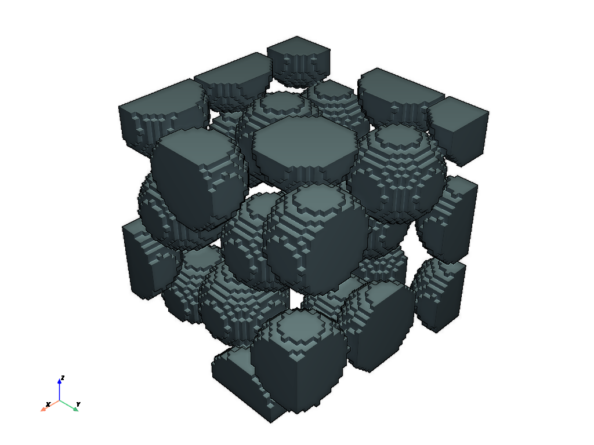
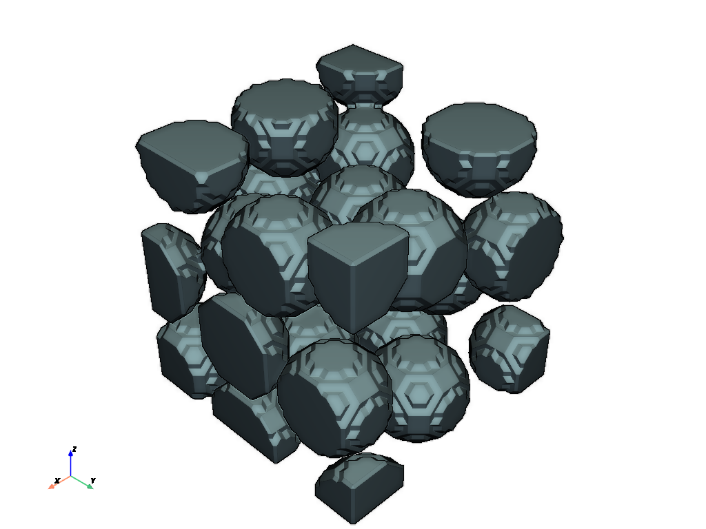

to_stl#
The to_stl function converts a boolean voxel image into an STL object. Various methods for doing the conversion are available, and the returned result can be in a variety of formats.
import porespy as ps
import pyvista as pv
pv.set_jupyter_backend('static')
im#
The input image should be a bool. The mesh will represent the True voxels.
im = ps.generators.random_spheres([50, 50, 50], r=8, edges='extended')
mesh = ps.io.to_stl(im, fmt='pyvista')
pv.plot(mesh, eye_dome_lighting=True, jupyter_backend='static')

fmt#
The returned value is an object of the type specified by fmt. Options are ‘pyvista’, ‘meshio’, ‘opend3d’, ‘trimesh’, ‘skgraph’ (aka ‘vfn’ for “vertices”, “faces” and “vertex normals”), and ‘openstl’ (ada ‘triangles’).
mesh = ps.io.to_stl(im, fmt='trimesh')
print(mesh)
---------------------------------------------------------------------------
ModuleNotFoundError Traceback (most recent call last)
File ~/work/porespy/porespy/src/porespy/io/_stl.py:315, in to_stl(im, filename, voxel_size, method, fmt, remove_duplicates, tol)
314 try:
--> 315 import trimesh
316 except ModuleNotFoundError:
ModuleNotFoundError: No module named 'trimesh'
During handling of the above exception, another exception occurred:
ModuleNotFoundError Traceback (most recent call last)
Cell In[3], line 1
----> 1 mesh = ps.io.to_stl(im, fmt='trimesh')
2 print(mesh)
File ~/work/porespy/porespy/src/porespy/io/_stl.py:318, in to_stl(im, filename, voxel_size, method, fmt, remove_duplicates, tol)
316 except ModuleNotFoundError:
317 msg = "trimesh can be installed with pip install trimesh"
--> 318 raise ModuleNotFoundError(msg)
319 mesh = trimesh.Trimesh(vertices=v, faces=f, face_normals=n, process=False)
320 elif fmt == 'open3d':
ModuleNotFoundError: trimesh can be installed with pip install trimesh
‘method’#
The method used for create the STL mesh can be either ‘direct’, which corresponds exactly to the voxels, and ‘marching-cubes’ which has slightly smoother faces.
mesh = ps.io.to_stl(im, method='marching-cubes', fmt='pyvista')
pv.plot(mesh, eye_dome_lighting=True, jupyter_backend='static')

remove_duplicates#
This option, if set to True removes duplicate vertices and faces to reduce the size of the dataset.
mesh1 = ps.io.to_stl(im, method='marching-cubes', fmt='pyvista', remove_duplicates=False)
mesh2 = ps.io.to_stl(im, method='marching-cubes', fmt='pyvista', remove_duplicates=True)
print(mesh1)
print(mesh2)
PolyData (0x300af6320)
N Cells: 56084
N Points: 168252
N Strips: 0
X Bounds: 5.000e-01, 5.050e+01
Y Bounds: 5.000e-01, 5.050e+01
Z Bounds: 5.000e-01, 5.050e+01
N Arrays: 0
PolyData (0x300a92b00)
N Cells: 56084
N Points: 28064
N Strips: 0
X Bounds: 5.000e-01, 5.050e+01
Y Bounds: 5.000e-01, 5.050e+01
Z Bounds: 5.000e-01, 5.050e+01
N Arrays: 0
As can be seen the mesh has quite a lot fewer points after the duplicates are removed.